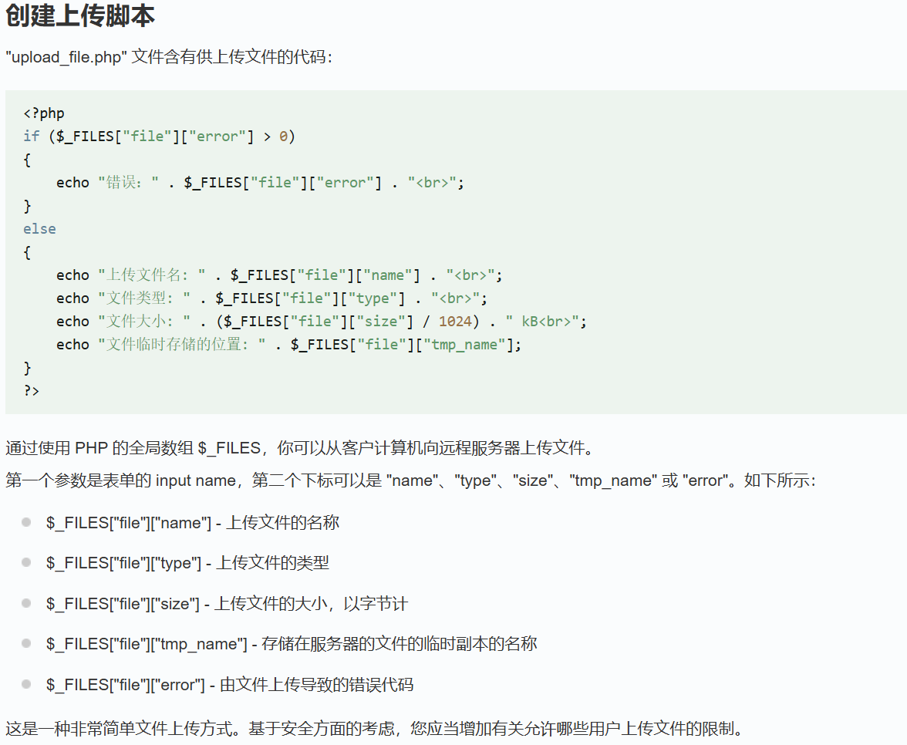
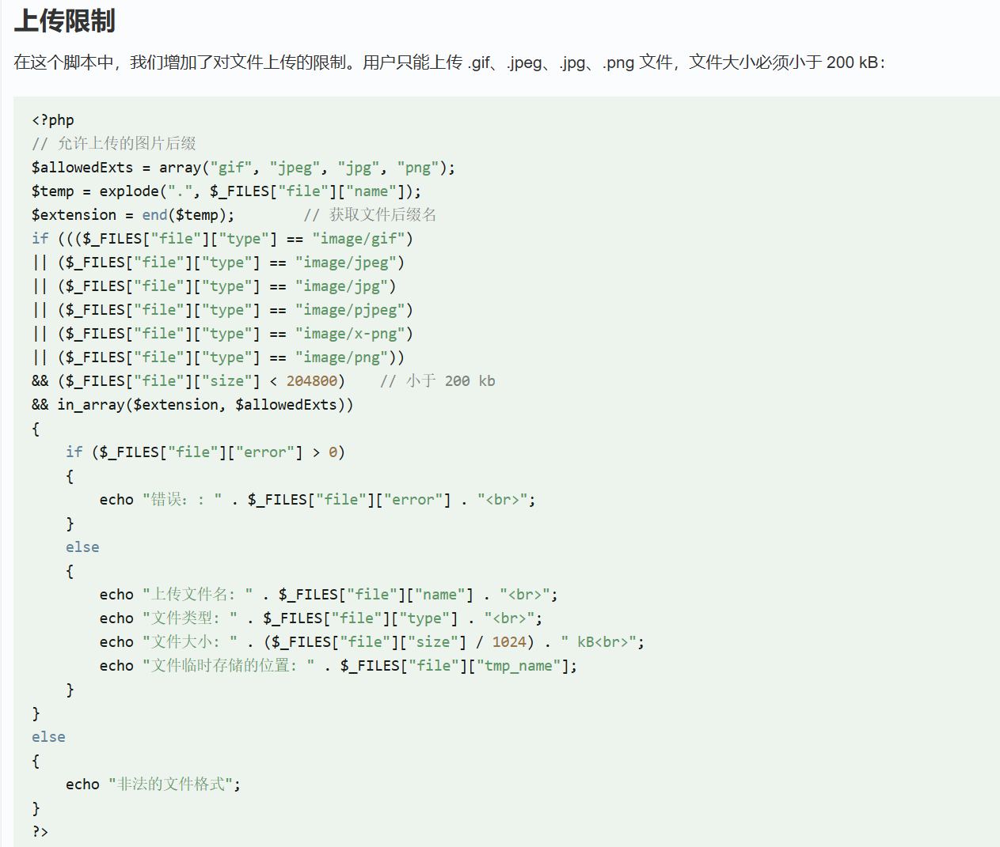
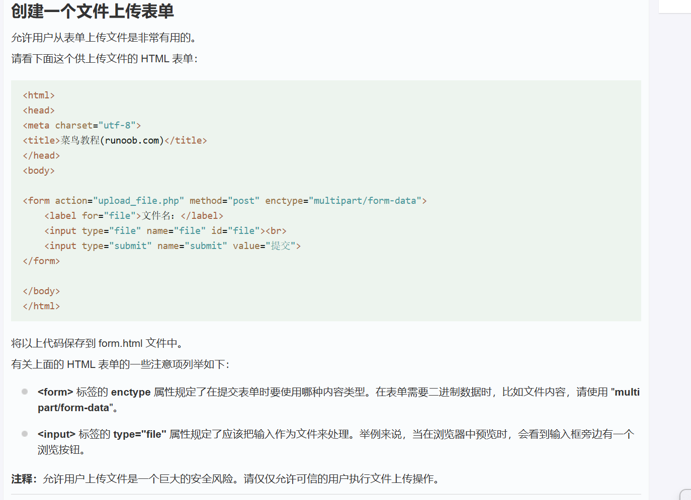
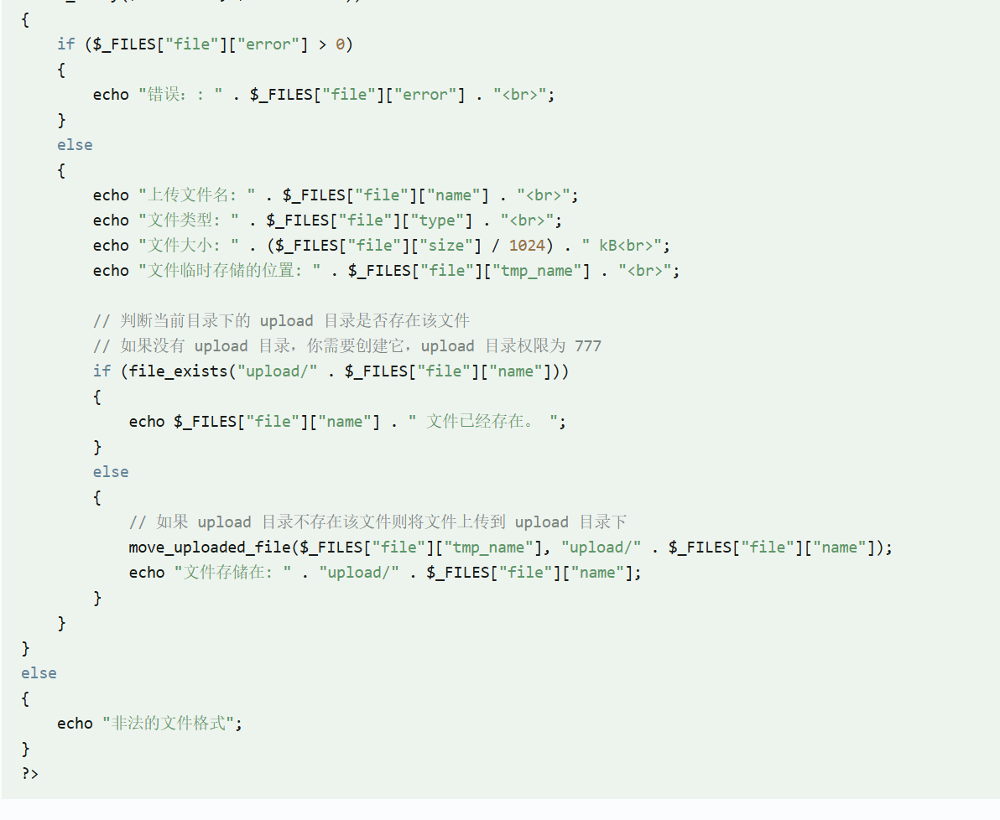
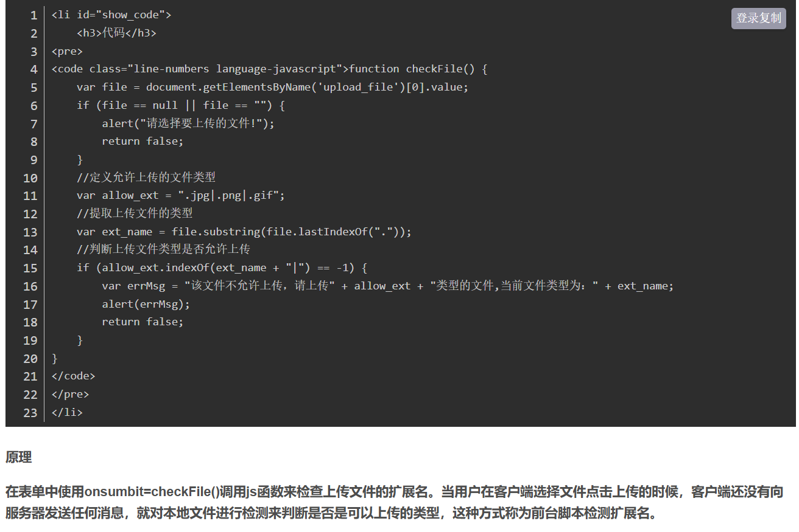
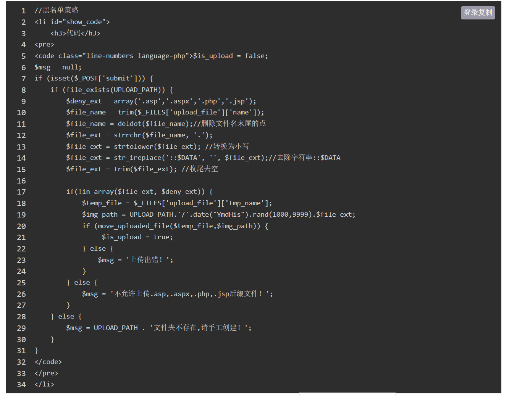
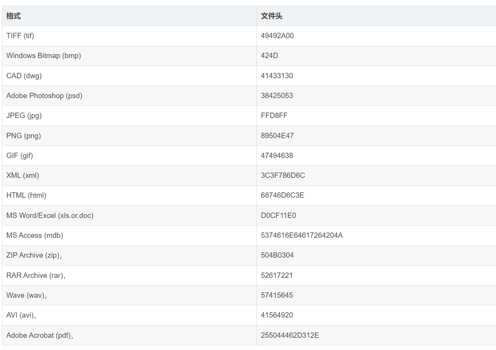
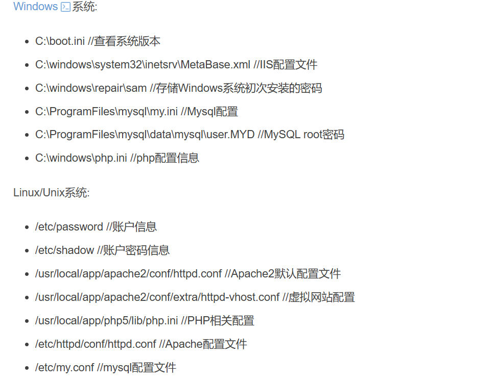
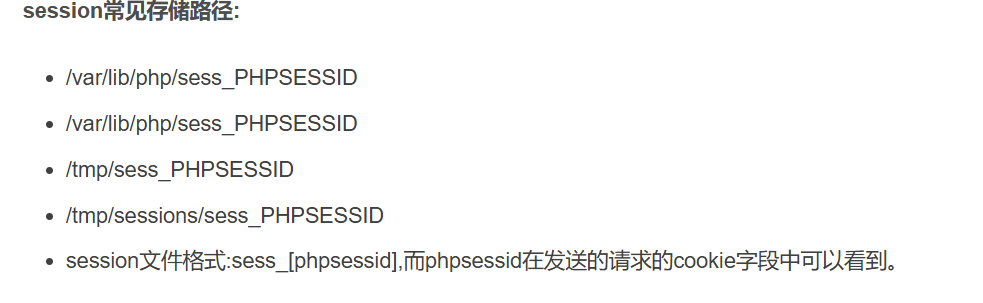
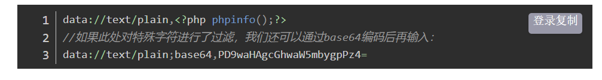

# 文件
# 奇怪的要求～
1、请大家写一个文件上传的表单，用于向服务端上传文件，并用 php 作为后端，抓包分析这个请求体的结构是什么样的呢？
<!-- 前端表单 -->
<form action="upload.php" method="post" enctype="multipart/form-data">
<input type="file" name="myfile">
<input type="submit">
</form>
<!-- PHP后端 upload.php -->
<?php
move_uploaded_file($_FILES['myfile']['tmp_name'], 'uploads/'.$_FILES['myfile']['name']);
对于前端的部分:
action="upload.php" 是将数据提交到目标 url，由该 php 文件处理（也就是说要注意路径可以绝对可以相对，如在上级，可用../upload.php）
enctype="multipart/form-data" 是指定传输过程中的编码类型
其中包括：
application/x-www-form-urlencoded
使用 url 编码，是默认的方式，只能文本数据，存在于 HTTP 请求体
multipart/form-data
上传文件必用，会把数据分为多个部分（文本或二进制，所以非文本都是使用二进制文件，不能使用其他编码方式）
text/plain
纯文本传输，原始格式不变，键值间等号连接，没有封装或编码
对于后端的部分:
move_uploaded_file()
是 php 内置函数，移动文件，接受俩参数
$_FILES['myfile']['tmp_name']：$_FILES 是超全局数组，用于处理上传的文件。
myfile 是 name 属性值。
['tmp_name']是临时存储路径。
['name']是文件名(不只这个键，但键是固定的，不是按照实际填，它是返回实际)
后面一个参数通过拼接字符串构造要移动到的路径
POST /upload.php HTTP/1.1 | |
Content-Type: multipart/form-data; boundary=----WebKitFormBoundaryABC123 | |
------WebKitFormBoundaryABC123 | |
Content-Disposition: form-data; name="myfile"; | |
//头部字段，前一个表示是表单数据 | |
filename="test.txt" //原始文件名 | |
Content-Type: text/plain | |
文件内容在这里... | |
------WebKitFormBoundaryABC123-- |
boundary是multipart/form-data的参数，定义用于区分请求体各个部分的分隔符。
2、怎样去指定上传目录（如 /tmp）s，在这种情况下你有什么招能让木马文件落地在 web 目录（假设为 /var/www/html）呢？
可以是.sh,.bin,.php,.asp/aspx (windows 服务器上的同名应用程序可执行),.jsp (基于 java 的 web 程序)
路径穿越攻击
这是因为上面的拼接路径导致的
由于文件名直接拼接所以如果文件名本身是个路径，也会直接拼接进去
（所以可以通过构造../../../../../shell.php，不断向上层目录移动）
符号链接 (软链接) 攻击
类似于快捷方式
这样原本写入 /tmp 的会直接到 /var/www/html（要构造成 link/shell.php）
PHP 路径处理缺陷攻击
类似于路径穿越，但是不一定要用../，可以去敏感路径
包括：
- Web 根目录
Apache 服务器
/var/www/html
C:\wamp\www（Windows 系统使用 WampServer 时）Nginx 服务器
/usr/share/nginx/html
- 可执行脚本目录
/usr/local/bin或/usr/bin
C:\Windows\System32
3、学一下 php 的 eval () 函数的用法，并写点什么好玩的～，如何在 php 中执行系统命令呢？比如 ls
echo 不只是回显，其中的命令也会执行
比如 echo system ('ls -l')
所以......
system($input); > shell.txt
4、在上传文件又要传递一个 POST 参数，此时请求包的参数是什么样的？
分割符下又多了几个，对于非文本，上面的文件内容都是二进制数据
5、你能在 js 的层面限制只能上传图片吗？
使用事件侦听器
}startsWith: 用于匹配开头
e.target.files [0]:e.target 是触发的标签，files 表示其中的文件，[0] 表示第一个
e 是传入的事件对象 value 是选择框，最后就是清空，让用户重选
PS:<input> 有 accept 属性 (
accept="image/*")，但是可以被绕过
另外 AI 给的玩意儿：
document.querySelector('input[type="file"]').addEventListener('change', function (e) { | |
const file = e.target.files[0]; | |
const imageRegex = /^image\/(jpeg|png|gif|bmp)$/; | |
if (!imageRegex.test(file.type)) { | |
alert('仅允许上传 JPEG、PNG、GIF 或 BMP 格式的图片！'); | |
e.target.value = ''; | |
} | |
}); | |
/*test 方法就是用来检测是否匹配正则的，^ 表示字符串开始，$ 表示结束 */ | |
document.querySelector('input[type="file"]').addEventListener('change', function (e) { | |
const file = e.target.files[0]; | |
const allowedExtensions = ['.jpg', '.jpeg', '.png', '.gif']; | |
const fileExtension = '.' + file.name.split('.').pop().toLowerCase(); | |
if (!allowedExtensions.includes(fileExtension)) { | |
alert('仅允许上传 JPEG、PNG 或 GIF 格式的图片！'); | |
e.target.value = ''; | |
} | |
}); |
至少某个软件是使用扩展名区分的......
6、请你利用请求包中 Content-Type 头检测文件的是否是图片
}//[type] 就是返回文件的 MIME
7、常见的图片类型（jpg,png,gif）的文件头有什么特征？试着在你的防护中加入对应的检测
jpg:FF D8 结尾是 FF D9
png:89 50 4E 47 0D 0A 1A 0A
gif:47 49 46 38 39 61 (GIF89a，但实际上后面三个是版本)
function checkFileHeader($file) { | |
$headers = [ | |
'jpg' => "\xFF\xD8\xFF", | |
'png' => "\x89\x50\x4E\x47", | |
'gif' => "GIF89a" | |
];// 定义关联数组 | |
$content = file_get_contents($file); | |
foreach ($headers as $type => $header) | |
// 这种写法适用于关联数组的遍历，as 后的就是临时变量，存储读取的键值 | |
{ | |
if (strpos($content, $header) === 0) return $type; | |
}//strpos 用于查找字符串中首次出现指定子字符串的位置 | |
// 默认从零 (首位) 开始，返回数字 (第几位)，默认从头开始，也可再加参数指定 | |
// 没有返回 false | |
return false; | |
} |
8、请你写一个能够过滤.php 后缀的 waf
$filename=$_FILES['file']['name'] | |
$fileExtension=pathinfo($filename,PATHINFO_EXTENSION); | |
if(strtolower($fileExtension)==='php'){ | |
echo '你在干什么？' | |
}else{ | |
move_uploaded_file($file['tmp_name'], 'uploaded/'); | |
echo '是的，就是这样。' | |
} | |
/*pathinfo (string $path, int $options) | |
options 可选： | |
PATHINFO_DIRNAME：返回文件所在的目录名。 | |
PATHINFO_BASENAME：返回文件的基本名称（包含扩展名）。 | |
PATHINFO_EXTENSION：返回文件的扩展名。 | |
PATHINFO_FILENAME：返回文件的基本名称（不包含扩展名） | |
不指定 option 返回关联数组，否则字符串 */ | |
不如直接判断MIME（application/x-php或者text/x-php） | |
有时也用file($_FILES['file']['tmp_name']) | |
而不是$_FILES['file']['type'] | |
来获取MIME | |
但是MIME可以伪造 |
9、请你使用 file_put_content () 来实现一次文件上传到指定目录
file_put_contents('uploads/'.$_FILES['file']['name'],file_get_contents($_FILES['file']['tmp_name'])); |
10、文件上传除了导致 php 代码执行，还可能导致什么漏洞？
任意文件覆盖漏洞，目录遍历漏洞（要能路径穿越），拒绝服务（DoS）攻击（上传大量垃圾），XSS（存储型），文件包含漏洞（上传包含恶意代码的 PHP 文件，然后构造请求让程序包含这个恶意文件，需要页面本身会动态包含上传文件）
11、为后续做个铺垫，请你想办法捕捉到文件上传瞬间临时目录（Linux 下是 /tmp）下的文件变化（动作要快，姿势要帅，临时文件消失快）
使用 inotify 监控 /tmp 目录
sudo apt install inotify-too #安装 | |
inotifywait -m -e create /tmp #监控目录文件创建事件 | |
#-m 持续监控，而不是一个就退出 | |
#-e create 指定监控的事件为创建 |
# 文件上传




临时的副本文件会在脚本结束时消失。
要保存被上传的文件，需要用 PHP 的 copy () 函数将它复制到其它位置
其他：
$_FILES 数组内容如下:
$_FILES ['myFile']['name'] 客户端文件的原名称。
$_FILES ['myFile']['type'] 文件的 MIME 类型，需要浏览器提供该信息的支持，例如 "image/gif"。
$_FILES ['myFile']['size'] 已上传文件的大小，单位为字节。
$_FILES ['myFile']['tmp_name'] 文件被上传后在服务端储存的临时文件名，一般是系统默认。可以在 php.ini 的 upload_tmp_dir 指定，但 用 putenv () 函数设置是不起作用的。
$_FILES ['myFile']['error'] 和该文件上传相关的错误代码。['error'] 是在 PHP 4.2.0 版本中增加的。下面是它的说明：(它们在 PHP 4.3.0 之后变成了 PHP 常量。)
# 漏洞
# 扩展名
一个前端的限制：

可以抓包改后缀 / 禁用 JS 来绕过～
后端的限制，可以黑 / 白名单：
$temp=explode(".",$_FILE['file']['name']); | |
$file_ext=end(temp); | |
$allow_ext=array('php','asp','aspx'); | |
if (in_array(strtolower($file_ext),$allow_ext)){ | |
echo 'POTATOWO'; | |
move_uploaded_file('uploads/'.$_FILES['file']['name'],$_FILES['file']['temp_name']); | |
}else{ | |
echo '还是太善良了' | |
} |
然后是 CSDN 上的：

trim (): 用于去除字符串首尾的字符，默认是去空格，它在 JS 中是一个方法
欸？为什么不用 pathinfo 呢？我也不清楚
# MIME
上面说了。可以伪造，用 bp 修改 header
# 文件头
幻术头字节是文件头的一部分，用于表示文件类型，文件头本身可能包含其他信息，比如图片的位深等
# 常见的

绕过
对于 PHP 的文件由于 <?php ...php> 之前的都会被当成 html，所以写 php 文件前先乱写点什么
# 文件包含
注入型漏洞
包含是指调用被写在单个文件中的可重复使用函数
漏洞出现于用户可选要包含的文件
攻击者修改文件位置来执行任意文件
# 常用的函数
- require (): 找不到被包含的文件会产生致命错误，并停止脚本运行
- include (): 找不到被包含的文件只会产生警告，脚本继续执行
- require_once () 与 require () 类似：唯一的区别是如果该文件的代码已经被包含，则不会再次包含
- include_once () 与 include () 类似：唯一的区别是如果该文件的代码已经被包含，则不会再次包含
它们的参数都是路径
对于 PHP 来说，无论执行的文件是什么玩意儿，只要其中有 PHP 代码，就会执行
# 本地文件包含（LFI）
就是打开本地的文件，可以用于获取敏感信息
例如：

显而易见，你可以用来执行文件上传漏洞的 webshell
你可以它放在被包含的路径上
# 包含 Apache 日志文件
如果没有上传但是包含，而且日志可读且已知路径
每次访问的 url 都会被记录到 access.log
发生错误就记录到 error.log
你可以在 url 中写 PHP 让它记录下来
（注意：会被编码，记得 bp 抓包改报文）
然后包含该日志
有趣的是，执行的结果会替换在日志中的对应语句的 url 中（存疑）
# 包含 SESSION 文件
SESSION 中有可控变量，并且可以读写，知道路径

# 包含临时文件
就是传说中的上传后的临时文件
Linux 是 /tmp
Windows 是 C:\windows\temp
因为 Linux 的随机函数有缺陷，windows 只要 65535 种情况，所以一般暴力猜解
文件名
也可以看 phpinfo 页面的 php variables 直接获取上传文件的存储路径和临时文件名
---- 但是必须在该 PHP 文件执行结束前就完成所有操作
# 远程文件包含（RFI）
需要配置选项 allow_url_include 和 allow_url_fopen 状态为 on
反正就是可以包含其他服务器上的文件
你可以用 %00 (php 版本小于 5.3.4) 或者？来截断 url
（如果有需要去掉后端本身可能存在的拼接内容）
# PHP 伪协议
# file://
访问本地文件，不受 allow_url_fopen/include 影响
需要绝对路径（包括文件名）
# php://
访问输入输出流
php://filter 读取源代码，base64 输出 (不这样会被直接执行，当你访问文件时)
php://input 执行 php 代码（具体代码是请求体中的，不是 url，自己用 bp 加，需要 <>）
不受 allow_url_fopen/include 影响（input 要求 include 是 on）
# ZIP://
访问压缩包里的文件，只能绝对路径
分割符（分割路径和包内文件） # 要用 url 编码成 %23
不受 allow_url_fopen/include 影响
类似的：
zlib://，bzip2://
无所谓后缀名
# data://
类似于 php://input，但是
allow_url_fopen/include 必须都是 on
